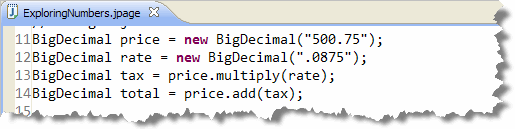
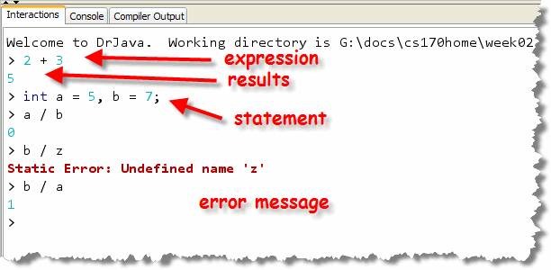
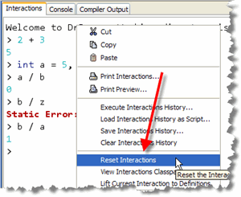
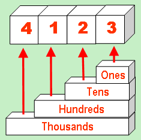
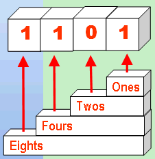
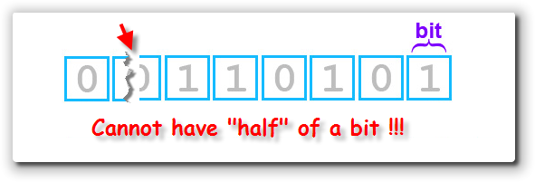

When you "look under the hood" of a
Java program, what
you find is a community of cooperating objects.
And, when you
take a closer look at those cooperating objects, what you find
are more objects; the Graphics objects and
String objects and Scanner objects
that make up the attributes of the programs you've built so far.
But, what do you find if you look even deeper, putting each of those attributes "under the microscope"? There, you'll discover a different kind of entity—the primitive type.
Here in the "real" world, all of us understand that the objects we deal with every day—our cars and homes and even our pets and neighbors—are all constructed of simpler, and amazingly similar, primitive components: chemical compounds, molecules, (like the Hyaluronic acid molecule, shown to your right), and atoms.
The same is true in the computer programming world—no matter what the language, at some level, if you drill down deep enough, everything is made of bits, which are the atoms (or maybe the electrons and protons) of the computing world.
The Hyaluronic acid molecule is displayed via an applet called MoleculeViewer. Use your mouse to rotate the model in space. This is one of the standard demo programs that come with the J2SE SDK. If you've installed the SDK (not just the JRE), you'll find it in your SDK folder under /demos/applets/MoleculeViewer. If you don't have the JDK, you can find them online at http://java.sun.com/applets/jdk/.
The Great Divide
While Java does have facilities for dealing directly with bits—the most primitive elements in the computer cosmology—you may never have to directly use one. (We won't cover these operators in this book, but here is a website with many examples.)
There is a second kind of Java creature, however, that you're certain to encounter. These are the creatures that live midway between the minimalist world of the bit and the comfortable world of objects. We call these creatures primitives, types, or fundamental types.
If bits are the "atoms" of the computing world, then primitive types are the fundamental molecules, like water and iron.
What Are Primitives?
Primitives are much like Java objects, because they have identity, state, and behavior. We'll discuss these characteristics later in the course when we work a little more with object types.
Primitive types differ from full-fledged objects, however, in three important ways:
-
Primitive variables are scalar. That means that they
can hold only a single value like
12or7.35. Objects, by contrast, usually have many attributes, all of which can take on different values. ADateobject has values for month, day and year, for instance. - Primitive values are manipulated only by operators,
while Java objects respond to messages. You can ask a
Graphicsobject todrawString(), but you have to use+or*with numbers. - The behavior of primitives is built-in. You cannot change the way that a number responds to the addition operator, for instance. With objects, on the other hand, if you don't like a behavior, you can change it by creating your own version of the class, and then writing a new method.
Why Primitives?
Many "pure" object-oriented languages, such as Smalltalk,
have no primitive types. In those languages, everything
is an object: not just Strings and
Graphics, but also numbers and characters.
This has the advantage
of consistency; users don't have to think about how to do
an operation because all objects work in a similar way.
On the other hand, having both primitive types for numbers and characters, in addition to more complex object (or reference) types, also has some advantages. The two most important advantages are:
- Simplicity : For arithmetic, at least,
primitive types, along with operators and operands,
seems easier to understand. Think about summing two numbers,
for instance.
For most of us, the thought of telling a number object to
add itself to another number object and then go tell a
third number object the result like this:

is not nearly as intuitive as writingtotal = price + tax. - Efficiency : In general, primitive types consume less memory than objects do, and operations on primitive types run faster than equivalent operations on objects using methods.
The Four Families

Java has four "families" of primitive types:
- integers
- floating-point numbers
- characters
- true/false values called
boolean
In this section, we'll look at the integer and floating-point families of numeric primitives. Before we do that, though, I want to introduce you to a new feature of DrJava: the Interactions Pane.
Interactive DrJava
 DrJava is a lightweight Java
IDE developed by the JavaPLT group at Rice University.
In addition to creating, running and testing programs using
its Definitions Pane, DrJava also contains an
Interactions Pane that allows you to evaluate "snippets" of code
without writing a whole program. This is a little more,
well, interactive, because it allows
you to evaluate Java code from a console-type window.
DrJava is a lightweight Java
IDE developed by the JavaPLT group at Rice University.
In addition to creating, running and testing programs using
its Definitions Pane, DrJava also contains an
Interactions Pane that allows you to evaluate "snippets" of code
without writing a whole program. This is a little more,
well, interactive, because it allows
you to evaluate Java code from a console-type window.
The Interactions Pane
To use the Interactions Pane, just type the
expression you want to evaluate, or the statement you want to execute.
When you press Enter, the action will be immediately
carried out, without compiling or running. Here are some examples:

In the example here:- On the first line, I typed the arithmetic expression
2 + 3, and then pressed the Enter key. Note that expressions do not end in semicolons. - As soon as I hit Enter, DrJava evaluates my expression and prints the results on the next line.
- I can also enter statements like the declaration
statement that creates the variables
aandb. Note that statements must end with a semicolon.
- Once defined, I can use the variables in other expressions or statements. If you make a mistake, DrJava simply prints out an error message, like the one shown here.
You may also often find the need to start over. You don't have to close and restart DrJava to do so. Just right-click the Interactions Pane, choose Reset Interactions, and all of the variable definitions and operations will be deleted. It's like getting a blank slate. (You can do the same thing by pressing the Reset button on the toolbar.)
You may also want to repeat a previous statement, or edit a previous expression. Just use the up-arrow to recall the command-history. As each previous command is recalled in the Interactions Pane, you can then edit the command before pressing Enter.
Meet the Integers
Integers are whole
numbers, including the counting numbers, zero and the negative
numbers. 27 is an integer, as is -345.
7.25 is not an integer, because it is not
a whole number.
 In math, integers are infinite. Think of the biggest whole number
you can imagine. No matter how big you make it, you can
always make it bigger by adding one more digit onto the end.
In math, integers are infinite. Think of the biggest whole number
you can imagine. No matter how big you make it, you can
always make it bigger by adding one more digit onto the end.
In contrast, integer primitives—in the computer sense—are finite because each integer number must be stored in a fixed-size region of memory. This is just like the different tubs of popcorn at the movie theater: you get the same kind of popcorn in each tub, but the Small size doesn't hold as much as the Super size.
A computer type, like int, isn't really
an integer in the pure mathematical sense; instead, it's
just a representation of the abstract integer concept,
in the same way that a black-and-white photograph is a
limited representation of reality; both are subject to
certain constraints.
These "computer-style" integers come in two "flavors": signed integers, which represent both positive and negative whole numbers (as well as zero), and unsigned integers, which represent only zero and the positive whole numbers. All of Java's integers are signed integers, but other languages, like C++, have unsigned integer types as well.
Unsigned integers can represent numbers of a greater magnitude than an equivalently sized signed number, but both kinds have the same range. For instance, the largest unsigned integer that can be represented using two bytes of storage is 65,535, while the largest signed integer, using the same amount of storage, is 32,767. Both types, though, can represent 65,536 distinct integer values.
How Integers Are Stored
To understand how integer numbers are stored in memory, you first need to understand a little about how binary numbers work.

Internally, all computers and all programs use binary numbers to represent everything. Everything includes text, numbers, sound, and graphics, as you saw in Chapter 1.A binary number is just like the decimal numbers you grew up with, except it uses base 2 instead of base 10. We call our decimal number system base 10, because it uses ten digits: 0 to 9. When we combine these digits together to produce larger numbers, the value of each digit depends upon its position in the number as a whole.
If the digit is in the first position, it represents the number of ones, the second position represents the number of tens, the third the number of hundreds, followed by thousands, ten-thousands, etc.
Here's an example. Consider the decimal number 4,123:
- Starting in the right-hand position is the digit 3. Since it's in the right hand position, this means our number has 3 ones.
- The next position is the number of tens, and the digit in this position is 2 so we add 2 * 10 or 20.
- The third position is the hundreds, and here we have the digit 1, so we add 1 * 100 or 100.
- Finally, in the fourth position, we have the digit 4. Since this is the thousands position, we have 4 * 1000 or 4000.
If we add all of those together—4000 + 100 + 20 + 3—we end up with our final number.
Unsigned Binary Numbers

In the base two or binary number system, there are only two digits, 0 and 1, not ten digits. (Of course, that's why binary is used for digital computers, because electronic components like transistors, which can be on or off, can easily represent the binary digits in a binary number.)Because we have only two digits, the positions in the number take on a different meaning. Instead of the ones, tens, hundreds, and thousands places, we have the ones, twos, fours, eights, and sixteens places. (Notice that each place is simply two times the place value to its right, just like in the decimal system, each place is just ten times the place value to its right.)
If we look at the binary number 1101, you can see that, in decimal, it represents 1 one, plus 0 twos, plus 1 four, plus 1 eight, or 13.
Java Integer Specifics
Java's integer family has four members, the byte,
the short, the int, and the
long. Each of these primitive integer types uses
a specific amount of memory and thus, has a specific range of
values that can be represented.
Here are the specifics:
- The
bytetype uses, as you'd expect, a byte (8 bits) of memory, and can represent 256 different numbers: the numbers from -128 to +127. - A
shortuses two bytes (16 bits) of memory and thus can represent 65,536 different numbers—any whole number in the range -32,768 to + 32,767. - An
int, the most common number type you'll use in Java, uses four bytes (32 bits) of memory and can hold any number in the range -2,147,483,648 to +2,147,483,647, or, roughly, plus-or-minus two billion. - The granddaddy of all integer types is the
long, which uses eight bytes (64 bits) of memory and can hold values between, roughly, plus-or-minus nine quintillion. (-9,223,372,036,854,775,808 to 9,223,372,036,854,775,807 to be exact about it.)
You don't have to memorize the exact ranges, but you should have a rough idea without looking up the types. (+/-128, +/-32,000, +/-2 billion)
Integer Variables
To construct an integer variable, you just use one
of these four types in the variable declaration statement
like this:
 In my example here, I've declared one variable each of
type
In my example here, I've declared one variable each of
type byte, short, int
and long.
To initialize your new integer variables you can use integer
literals, existing integer variables, expressions, or input
methods. All of the examples here use integer literals.
To write an integer literal you simply write out the number, without commas or decimals. You may also use an optional sign character (+ or -), immediately preceding the digits, but nothing else.
As a stylistic matter, you really shouldn't use a plus (+) sign, since it is doesn't really have any meaning. Also, if you use a minus sign, don't leave a space between the sign and the first digit. That will make it easier for those reading your code to understand your intentions.
Literal Storage
When standing by themselves, or when used in a calculation,
plain integer literals use 32 bits of memory; in other
words, integer literals are of the int type.
If a number is very small, (for instance, the literal number 3
which could easily be stored in a byte), it
still uses 32 bits of memory, not just 8.
When used to initialize variables smaller than an
int, such as myAge or
milesToGo (in the example at the beginning of this
section), Java copies the appropriate number
of bits from the int literal into a variable of the
specified size, after first making sure it will fit.
Here are two examples:
// Literal 10 uses 32 bits of storage
byte aByte = 10; // Copy 8 bits into aByte
byte bByte = 150; // Too large to fit into 8 bits; error
The literal values 10 and 150 both occupy 32 bits (or 4 bytes) in
memory. When the compiler examines this code, it "notices" that
no information will be lost in the first case, if three of those
bytes are discarded and the remaining byte is transferred to the
variable aByte. In the second case, though, the
compiler sees that information will be lost if only one
byte from the literal 150 is transferred to the variable
bByte, and so it refuses to allow it.
While
Java always uses the int type for integer literals,
you can force it to use 64 bits to store an integer by appending
an L (for long) to the value like this:
3L.
You'll find this useful when you learn about overloaded
methods because it allows you to call a specific method
by varying the type of the argument you pass.
myObject.someMethod( 3 ); // calls someMethod( int )
myObject.someMethod( 3L ); // calls someMethod( long )
You also need to append an L when you want to write very
large literal numbers, like that used to initialize the
populationWorld variable in the example shown
at the beginning of this section. If you fail to add the
L at the end, the compiler will complain that the number
you've typed isn't a valid integer.
Other Integer Bases
When you write integer literals of any type, Java assumes you are using the decimal (base 10) number system. (These are still integers, however. Don't start thinking decimal point!) For those of you with a need to write literals in a base other than 10, you have two options:
- Java interprets an integer literal that starts with zero as an octal (or base 8) number.
- Java interprets literal numbers that start with zero-x, (or zero-X), as hexadecimal (or base 16) numbers.
For those of you with a need to write your integer literals in some other base, base-five or base-twelve, for instance, you're out of luck. Here are a couple of examples:
int ten = 10; // 1 ten + zero ones
int eight = 010; // 1 eight + zero ones
int sixteen = 0x10; // 1 sixteen + zero ones
Why Bother?
Why would you even want to use an octal or
hexadecimal literal instead of the more comfortable base-10
numbers we humans are used to? Well, for some applications,
hexadecimal is much more convenient. Here, for instance, is
the (typically convoluted) code for a Web page:
 Like many HTML pages, the background and foreground colors
are specified using hexadecimal numbers. If you were writing an
applet whose color need to match the background color shown here,
then using decimal, like this:
Like many HTML pages, the background and foreground colors
are specified using hexadecimal numbers. If you were writing an
applet whose color need to match the background color shown here,
then using decimal, like this:
Color bgColor = new Color(13421772);
is much more confusing than using hexadecimal, like this:
Color bgColor = new Color(0Xcccccc);
Which Integer Type Should You Use?
Since you have the option of using four different types of integers, which one should you use? The general rule-of-thumb is that you should use the smallest type that will hold the largest value you expect.
Unfortunately, this rule of thumb can lead to some surprising problems because:
- Smaller sizes won't necessarily save memory.
Calculations always use
intorlong, neverbyteorshort. You'll only save memory if you have large collections (arrays) ofbytes orshorts, and you don't need to do individual calculations on the elements. - Using an
intwhen you should have used alongcan create overflow problems, and you will not be warned. This can occur when any part of a calculation usingintvalues becomes greater than (approximately) 2 billion. When this overflow occurs, your calculation will be incorrect. When deciding which type to use, you have to consider all intermediate calculations as well as the final result:
If you mentally examine this expression, you can see that it should evaluate to 400,000 * 1 (since 400,000 / 400,000 is 1). When you evaluate it, though, you'll find that the results are a little bit different.
The best rule of thumb is:
Always use int; unless you must use something else!
Real Numbers
As you saw in the previous section,
Java has both object types, such as Graphics and
String, and primitive types, which consist
of numbers, characters, and true-false values.
You just met the four Java integer types:
byte, short, int, and
long. Each integer type represents a set of signed,
whole numbers of a particular range; byte has the
smallest range, and long has the largest. None of
these integer types, however, can represent fractional
or "real" numbers.
Real numbers in Java are represented by
the two floating-point types, float and
double. Floating-point primitive types
can hold fractional values in addition to whole numbers. These
types are the topic of this section.
How Floating-Point Numbers Are Stored
You've previously seen how binary numbers are used
to represent whole numbers, or integers. We also
use binary numbers to represent real or
floating-point numbers. You might wonder
how this is possible, though, since you can't really
have "half a bit":

Instead, floating-point binary numbers can store fractional values because they use a different internal format than binary integers do. Instead of storing one simple binary value,
floating-point numbers are stored as two binary
numbers: an integer value, called the exponent,
and a binary fraction known as the significand or,
more informally, the manitissa. In addition,
floating-point numbers keep one bit reserved to store
the sign of the number.
When the actual value is used, a mathematical operation is
performed by your computer using the two binary numbers to
compute the final amount.
Here's an example. Suppose we want to store the real number
13.75 as a floating point number. We'd first convert the
whole number part to the binary number 1101
as shown in the previous lesson. But, how do we represent
the .75 part?
The fractional portion of a binary number works just the same way as the fractional portion of a decimal number. In a decimal number the first place to the right of the decimal is 1/10, the next 1/100, and the next 1/1000. With the binary, or base 2 system, the first position to the right is 1/2, the next 1/4, and the following 1/8.
 Given this information, you can see that we can represent
the decimal number
Given this information, you can see that we can represent
the decimal number 13.75 as the binary number
1101.11, where the .11 represents
1/2 + 1/4 or .75 in decimal.
To store this number in the floating-point format, we move
the binary point to the left by 4 places, so we have a
mantissa of 110111 and an exponent of
100 (4 in decimal). Since the number is
positive, the sign bit is 0.
If you're interested, you can learn more about how floating-point numbers are stored, including all of the nity-gritty details that I've just glossed over, get started by reading the Wikipedia article on floating-point numbers.
Floating-point Limitations
Because of this scheme, floating point numbers are often only an approximation of the actual number you are trying to represent.
 Most of us are familiar with this concept from fifth and
sixth grade when we learned about fractions and decimal numbers.
In fifth grade we learned that 1 divided by 3 was 1/3, and
1/3 + 1/3 + 1/3 was 1.
Most of us are familiar with this concept from fifth and
sixth grade when we learned about fractions and decimal numbers.
In fifth grade we learned that 1 divided by 3 was 1/3, and
1/3 + 1/3 + 1/3 was 1.
When decimal numbers came round the next year, however, things got a little more complex; 1 divided by 3 became .3333333 and there didn't seem to be any way to get back to where you started by adding the results together.
The same kind of thing occurs with binary floating point numbers. Just as you cannot accurately represent the number 1/3 as a decimal (base 10) number, there are certain numbers that cannot be represented in binary (base 2). The only difference is that there are more repeating fractions with binary numbers, than there are in decimal.
This type of problem is called a representational error, or, sometimes, a rounding error.
Floating-point numbers are also susceptible to other kinds of errors that can snare the unwary or the extra-weary. If you add a very small number and a very large number together, for instance, you will often exceed the number of digits that the floating-point number can accurately represent. You can find out more in the Wikipedia article referenced earlier.
Java's Floating-point Numbers
 Java has two different primitive types for storing
floating-point numbers, the
Java has two different primitive types for storing
floating-point numbers, the float and the
double.
Think of them as the Big Gulp (32 oz.) and Super
Big Gulp (64 oz.) of
floating-point numbers. As with the different types in the
integer family, each of these two types uses a different
amount of memory and can represent a different range of
numbers.
While the different integer types differ only in their range, floating-point types differ in their precision as well. The precision of a floating point number is measured by the number of significant digits in its presentation. Here's an example applet that shows you how precision works.
Here is a large number, easily within the
range of a float or double:
Click your mouse in the text field, and then press the ENTER key. The applet redisplays the number just above the text field. You'll see that Java only retains a certain number of digits, and seems to "lose" the fractional portion of the number all together.
Here are the stats, (range and precision), for the two members of the floating-point family:
double
The double, (which is the default format
for floating-point literals, just like int
is the default format for integer literals), uses eight
bytes (64 bits) of storage.
The range of numbers it can represent include the positive and negative numbers as small as 4.94E-324, and positive or negative numbers as large as 1.79E+308.
For those of you not conversant with exponential notation, that last is the number 1.79 with the decimal point moved to right by 308 places. That is a very big number.
The precision for a double is approximately 16 significant digits.
float
The float uses half the storage as a
double, at four bytes (32 bits).
The float has about 8 digits of precision, and its range can represent very small positive or negative numbers from 1.4E-45, and very large positive or negative numbers up to 3.4E+38.
As you can see, the double type has
a range approximately ten times that of the float,
although its precision is only about twice the float.
That is the meaning of the name double, which is
short for double precision. For the same reason, some
other languages, such as Visual Basic, call the float
type, a single.
Floating-point Variables
Just as with integers, you create floating-point variables
by specifying the type, (float or
double), and a name, optionally followed by
an initializer. As with the integers, you can use
to write floating-point literals, previously initialized
variables, expressions, or user-input methods
to initialize your floating-point variables.
You can write floating-point literals in two different ways:
- using decimal notation, or
- using exponential, (or scientific), notation.
When you use decimal notation, you may use an optional sign, followed by digits and a single decimal point. You may have digits on either side (or both sides) of the decimal-point, but you don't have to have digits on both sides of the decimal, as you do in some languages (such as Pascal).
These are both valid variables, initialized using floating-point literals and written using decimal notation:
double first = .234; // No digit before
double second = 7.5432; // Digits on both sides
About Those floats
When you write a floating-point literal, Java automatically
uses the double type. This creates a problem when
you want to store the number in a float variable.
Remember that floating-point numbers are stored in a different
format than binary integers. To store a double
value in a float variable, Java cannot
simply copy part of the number, as it does for integers. Instead,
Java has to recompute both the mantissa and the exponent
portion of the number, which it does not do automatically.
Because of this, when you want to store a literal floating-point
number in a float variable, you must add an
F at the end of the number like this:
float third = 3.5F;
float fourth = .2756f;
Note that you may use either an uppercase F
or a lowercase f. You may alos append an uppercase
D or a lowercase d to a literal to signify that
it is of type double. This is occasionally useful:
the literal 7, for instance, is an int,
while 7d and 7.0 are both
double.
Exponential Notation
You can also write floating-point literals using exponential, (aka scientific), notation. To use exponential notation, write the first digit of your number, followed by a decimal point and all of the rest of your digits.
For instance, to write the number 23456.789
in exponential notation, start by writing:
2.3456789
Immediately following this, write an e
or an E—making sure you don't
add any spaces—followed by the number of places required
to move the decimal when the number is "decoded."
In our example, we need to move the decimal to the right by four places to reconstruct our original, so the finished number would look like this:
2.3456789E4
If the number you're working with is small—say
.000004572—you do the same thing.
The only difference is you use a negative exponent which says,
"move the decimal point to the left, not the right". To write
the preceding number in exponential notation you'd write:
4.572e-6
Make sure you don't confuse using a negative exponent (where the sign goes after the E/e) and a negative number, where the sign goes before the first digit.
What About Money?
The limitations of floating-point numbers are especially troubling when it comes to money, because one of the numbers that can't be accurately represented in binary is 1/10, or a dime. That means that if a computer uses floating-point numbers to keep track of the money in your bank account, there's a chance for someone to siphon off small amounts on each transaction.
This is called salami slicing and it's the basis
behind the plot of several different films, including
Superman 3, (with Richard Pryor playing the accountant
Gus Gorman), Hackers and Office Space.

Some Solutions
So, then, what should we do about money, since floating-point numbers are so "approximate"? There are several solutions.
First, we could keep track of all numeric values using integers, which are always completely accurate, even if they don't have the same range as floating-point numbers. Instead of keeping track of a floating-point value like $ 1,253.75, you'd store it as the integer 125,375, and remember that the number represents pennies.
If you have to do a floating-point calculation, such as averaging, you'd need to manually "round" the value by adding a half-cent or .005 before converting the floating-point number back to an int.
That's what high-performance financial applications, like those used by Wall Street and banks, do. Rather than using floating point numbers at all, you can store the actual data and do calculations in thousands or a cent (called mills) and only convert to dollars and cents when doing input and output.
The only problem is, since a long can only store numbers up to about +/= 18 quintillion, the largest dollar amount you'll be able to represent is about 180 trillion. That's probably enough for your personal financial situation (as long as the dollar doesn't accelerate its devaluation), but it's not enough for things like the national debt.
A Money Data Type
A better solution would be to create an accurate type to
represent Money. Many programming languages
have something like this. In C#, for instance, this type
is known as Decimal. Generically, these are
called BCD or Binary Coded Decimal types.
While Java doesn't have a BCD primitive type, it does have several arbitrary-range number systems represented as classes in the Java Class Libraries. An arbitrary-range number system is one that more closely mimics the theoretical number system, since it's numbers aren't restricted to a particular amount of storage.
The Java class that's best
for money is called BigDecimal. Using
BigDecimal for your calculations, though,
is more complex and your program will run more slowly.
Which Should You Use?
Choosing between using scientific notation and decimal notation when you write your literals is usually not difficult. If you have very large numbers or very small numbers, you should use scientific notation. If you have "numbers of everyday experience", you probably want to use regular decimal notation.
Deciding between the types float and double
also is usually not very difficult. The type double
is the "natural" type for most floating-point hardware today,
so, unless you have some compelling reason to use
float, don't.
Finally, what about choosing between int and
double? Why not just do everything as a
double so you only have to deal with one numeric type?
As tempting as that sounds, doing calculations with double
is significantly slower than using int.
In general:
Always use int unless you need fractions.
If you need fractions, use double.
Use the other numeric types only if you have compelling
reason.

Numbers Summary
- Java has both object and primitive or fundamental types. The primitive types are built into the language itself, while object types are part of the Java class libraries.
- Primitive types are: scalar (each variable holds one single value), value types (each variable contains the value it represents). Primitive types do not contain any methods, but are manipulated by built-in operators, and those operations are non-extensible (you can't change the behavior of the type).
- Java contains primitive types representing numbers (integers and real numbers), characters, and truth values.
- There are four different integer types:
byte,short,intandlong. These differ only in the amount of memory that they use (8, 16, 32 and 64 bytes, respectively). - Integer literals may be preceded with an optional sign, but must not contain any commas, decimals or other symbols; only digits are allowed. Unadorned integers are treated as base-10 numbers.
- Literals that start with the digit
0are interpreted as octal or base-8 numbers, and can only use the digits 0-7. Literals that start with0xor0xare interpreted as base-16 or hexadecimal numbers. Literals with an L suffix representlong(64-bit) values. - There are two different floating point or real number
types:
floatanddouble, using 32 and 64 bits of memory respectively. - Floating-point numbers are stored internally in a different format than integers; floating point numbers combine three binary integers—the exponent, the mantissa and the sign—to calculate the computed real-number value.
- When writing floating-point literals, you can use regular decimal
notation, or you can use scientific or exponential notation. To
write a float literal, use f or F as a suffix. You
may use a d or D suffix to indicate a
doubleliteral, but it is unnecessary. - The precision of a floating-point number is the number
of significant digits included in its display. A
floathas 7-8 significant digits, while adoublehas 15-16. The range of a floating-point number is the largest and smallest numbers that can be represented. - Floating-point numbers are susceptible to representational errors since there are many decimal numbers that cannot be accurately represented in binary (in the same way that 1/3 cannot be accurately represented in decimal).
- Normally, you will use the
inttype for whole numbers, and thedoubletype when you need a fractional value.